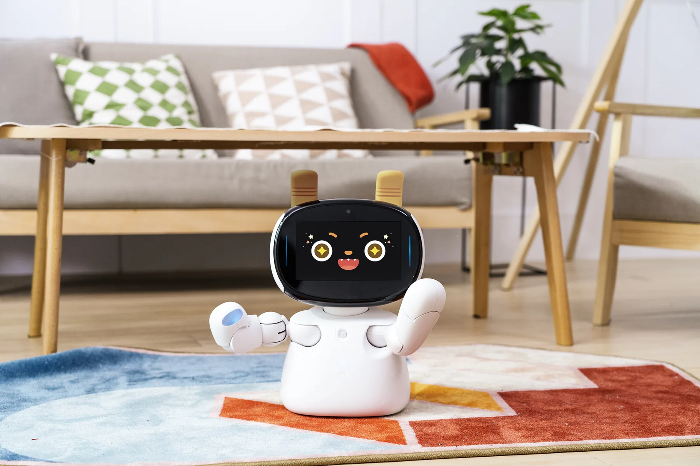

選ぶ
ホームで記録したいものを押します。

ジェネラス職員専用
今日の記録を、Kebbiといっしょに。
ジェネラス専用の共通アカウントでご利用ください。責任者が初回パスワードを変更し、職員に共有してください。接続が必要です。運用責任者が、職員内で共有する12文字以上のパスワードを設定してください。変更後は全員が新しいパスワードを使います。
下から、記録したいものを選んでください。
ひとつずつ、一緒に進めましょう。
終わる前に、画面上部の「保存済み」を確認してください。
写真：NUWA Robotics 公式宣材はじめての方へ
ホームで記録したいものを押します。
画面の番号に沿って入力します。時間は「スタート」「ストップ」で測れます。
最後に「この記録を保存する」を押します。「保存済み」が出れば完了です。
ホームの「続きから入力する」から戻れます。この画面内の移動では測定中の時計も続きます。
画面を閉じずに通信を確認し、上部の「今すぐ保存」を押してください。「別の画面で更新」と表示された場合は、表示される「バックアップを保存」を押して担当者へ相談してください。
画面上部の「文字を大きく」を押すと、文字がひとまわり大きくなります。もう一度押すと元に戻ります。
「記録を見る」から測定CSV・レポートを保存できます。他のCSVとまとめる場合は、ホーム下の「取込・出力／担当者メニュー」を開いてください。
おつかれさまでした
上部の保存状態をご確認ください。
入力は共通アカウントの保存先に自動保存されます。複数の端末で同じ内容を同時に編集すると、上書きを防ぐため保存が停止します。その場合はバックアップを保存し、再ログインしてCSVを取り込んでください。上部の「保存済み」を確認してから終了してください。通信できない間は、この画面を閉じずに再接続してください。ブラウザを閉じると再ログインが必要です。
元Excelの正式ID空欄や、職員一覧と役割表の未確定対応は保持しています。登録情報で確認済みの対応を設定してください。役割表は業務上の参照資料であり、専用アカウントの管理者権限とは別です。
初期アカウントは提供された職員コード一覧に基づき発行しています。退職・担当変更時は「停止」を選択してください。